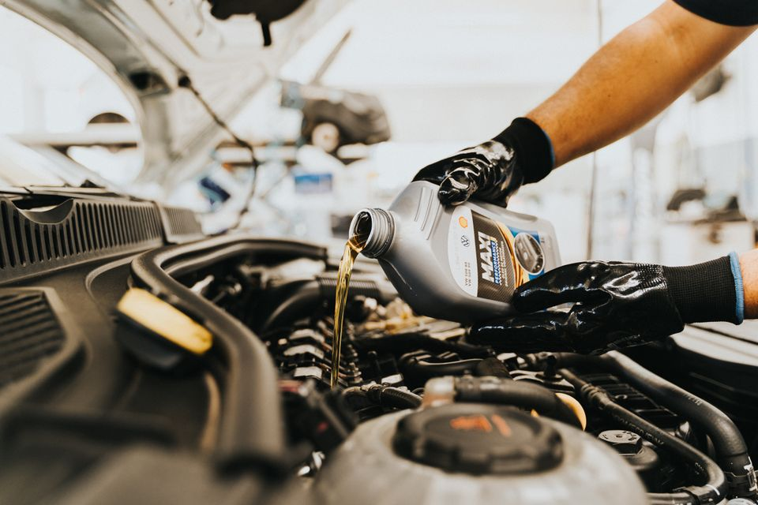
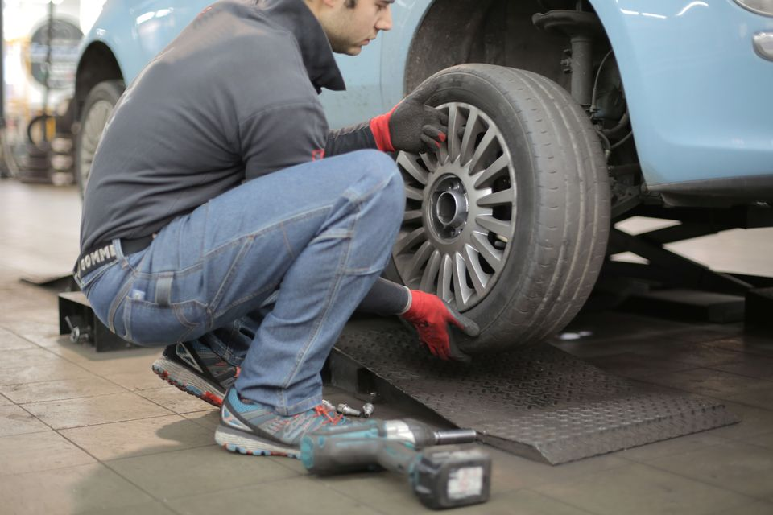
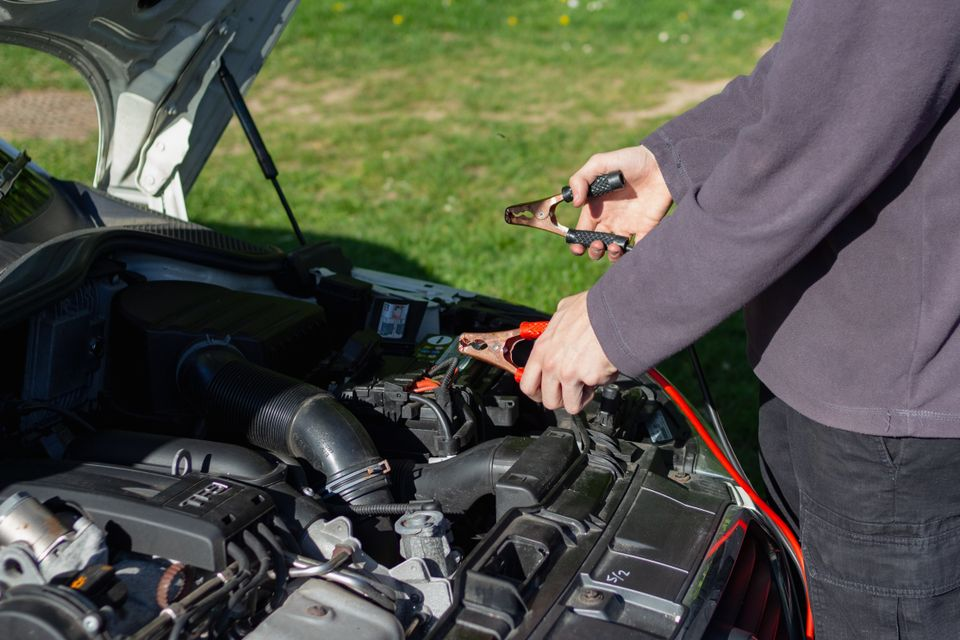
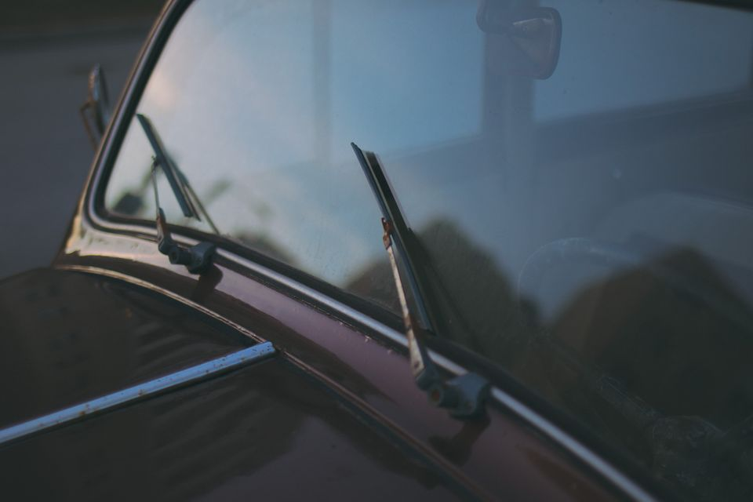
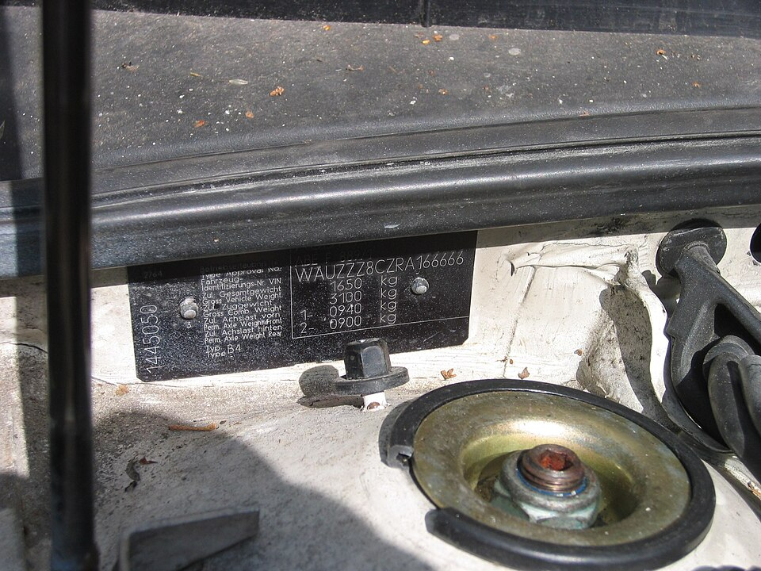
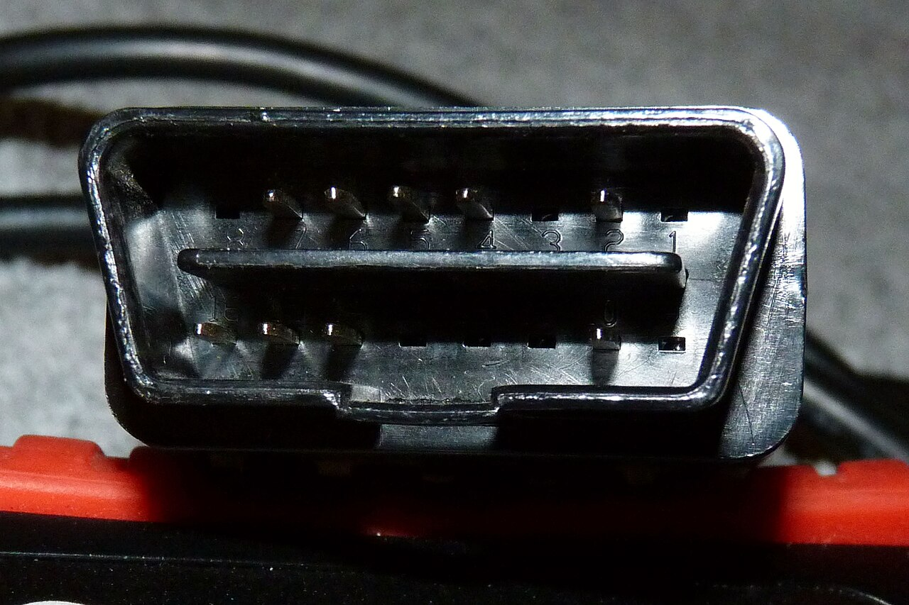
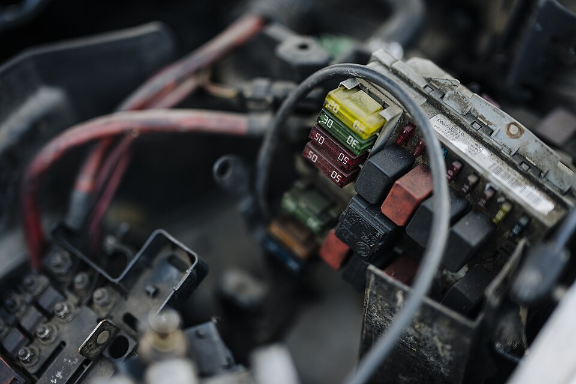
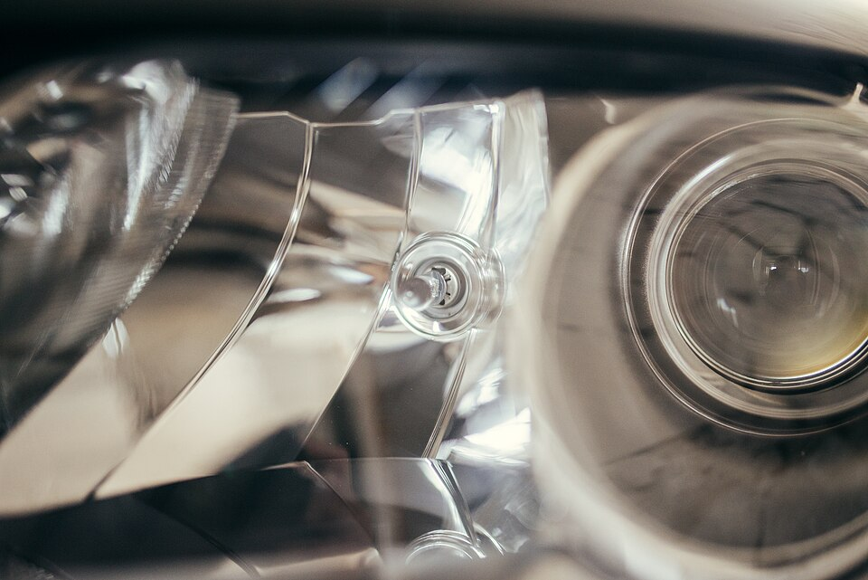

Engin Akyurt
Main tenant un pistolet de pompe à carburant.
Photographie originale ↗ · Pexels LicensePhoto d’illustration · cadrage adapté à l’écran.
Photographies utilisées pour les rubriques et les guides. Les images illustrent le sujet ; elles ne désignent pas un modèle de véhicule compatible.
Main tenant un pistolet de pompe à carburant.
Photographie originale ↗ · Pexels LicensePhoto d’illustration · cadrage adapté à l’écran.

Versement d’huile dans un moteur automobile en atelier.
Photographie originale ↗ · Pexels LicensePhoto d’illustration · cadrage adapté à l’écran.

Mécanicien tenant une roue devant le passage de roue d’une voiture en atelier.
Photographie originale ↗ · Pexels LicensePhoto d’illustration · cadrage adapté à l’écran.

Intervention avec des câbles de démarrage sur une batterie automobile.
Photographie originale ↗ · Pexels LicensePhoto d’illustration · cadrage adapté à l’écran.

Pare-brise et essuie-glaces d’une voiture ancienne.
Photographie originale ↗ · Pexels LicensePhoto d’illustration · cadrage adapté à l’écran.

Numéro d’identification sur la cloison moteur d’une Audi 80/90 B4.
Photographie originale ↗ · CC BY-SA 3.0Photo d’illustration · cadrage adapté à l’écran.

Connecteur OBD d’un outil de diagnostic automobile.
Photographie originale ↗ · Public domain / CC0 dedication offered by authorPhoto d’illustration · cadrage adapté à l’écran.

Boîtier de fusibles et connexions dans un compartiment moteur.
Photographie originale ↗ · CC BY 2.0Photo d’illustration · cadrage adapté à l’écran.

Détail d’un phare automobile.
Photographie originale ↗ · CC BY 2.0Photo d’illustration · cadrage adapté à l’écran.

Mécanicien travaillant sur un moteur posé sur un support en atelier.
Photographie originale ↗ · Pexels LicensePhoto d’illustration · cadrage adapté à l’écran.